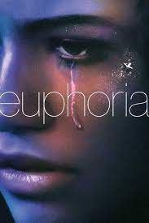
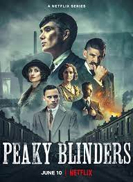

Euphoria
Em Euphoria, Rue Bennett (Zendaya) é uma jovem de 17 anos que acaba de sair da clínica de reabilitação após ter uma overdose. Rue sofre com transtornos mentais desde criança, o que a fez entrar em contato com drogas ainda no início da adolescência.
Como vender drogas online
Para reconquistar a ex-namorada, que está em um relacionamento com o traficante de drogas da escola, Moritz toma uma atitude ousada: criar um império online de venda de drogas.

Peaky Blinders
Em Peaky Blinders, Thomas Shelby (Cillian Murphy) e seus irmãos retornam a Birmingham depois de servir no exército britânico durante a Primeira Guerra Mundial. Shelby e os Peaky Blinders, a gangue de criminosos da qual ele é líder, controlam a cidade com mãos de ferro, construindo um império que vai desde corridas de cavalo adulteradas e roubo de carregamentos até parcerias secretas com os russos.